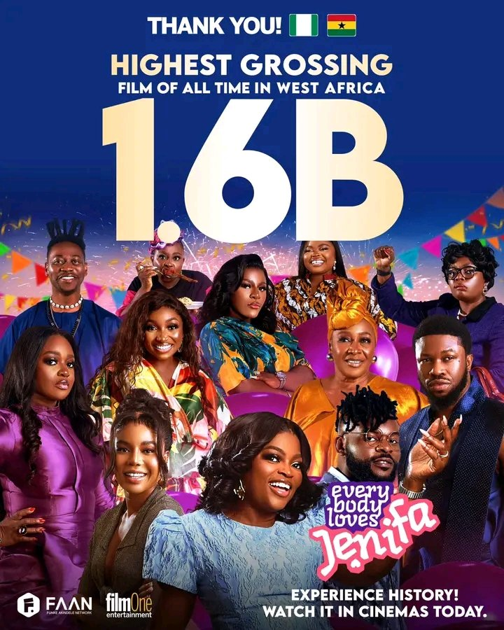

Funke Akindele’s Everybody Loves Jenifa is now the highest-grossing Nollywood film ever, setting a new industry record.
FilmOne,the movie’s distributor, recently announced that *Everybody Loves Jenifa* surpassed the ₦1 billion mark in under two weeks and remains the top box office hit.
With earnings exceeding ₦1.6 billion, the film has become the highest-grossing movie in West Africa at the time of writing.
Released on December 13, 2024, *Everybody Loves Jenifa* features a star-studded cast, including Nancy Isime, Stan Nze, Bisola Aiyeola, Patience Ozokwor, Chimezie Imo, Jackie Appiah, Folarin Falana, Isaac Olayiwola (popularly known as Layi Wasabi), and more.